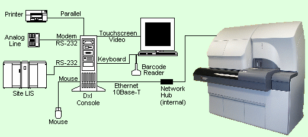
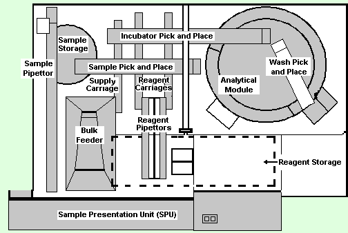
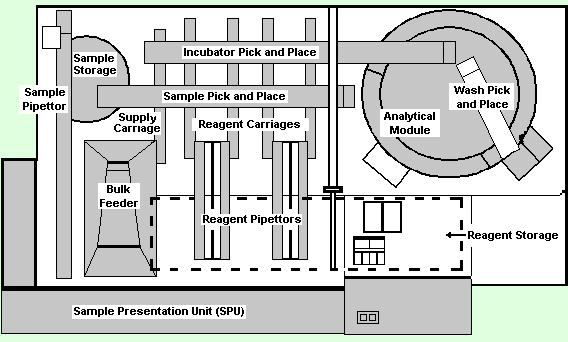

System Overview
Purpose
This document provides a general overview and differences of the DxI 600 and 800 Immunoassay analyzers.
General System Overview
The DxI Immunoassay Analyzer is a microcomputer-controlled and random- and continuous-access instrument that performs enzyme immunoassays (EIA). Enzyme immunoassays use a paramagnetic particle solid phase with chemiluminescent detection to measure analyte concentration. A luminometer measures the amount of light generated by the reaction solution.
DxI 600 and 800 Differences
| Module | DxI 600 | DxI 800 |
|---|---|---|
| Analytical | Identical | Identical |
| Bulk Feeder | Identical | Identical |
| Carriage | Two Reagent Carriages | Four Reagent Carriages |
| Consumables |
|
|
| Electronics |
|
|
| Fluidics |
|
|
| Peripherals | Identical | Identical |
| Pick and Place |
|
|
| Pneumatics | Accumulator mounted horizontally toward solid waste area. | Accumulator mounted vertically near intermediate waste |
| Reagent Pipettors | Two Reagent Pipettors | Four Reagent Pipettors |
| Reagent Storage | Two Reagent Slots in Reagent Load Tray | Four Reagent Slots in Reagent Load Tray |
| Sample Pipettor | Identical | Identical |
| Sample Presentation Unit |
|
|
| Sample Storage | Identical | Identical |
DxI 800 System Hardware Platform and Operational Environment

Theory of Operation
The DxI Immunoassay System automated analyzer features random access capabilities. The processing protocol allows simultaneous use of instrument resources to intermix the processing of various assays; pipetting, washing, and reading of multiple assays, in various stages, can occur concurrently. To accomplish this task, the system allocates instrument resources before processing using a real-time multitasking environment. Samples, reagents, and system supplies can be replenished, or waste emptied, while the instrument processes samples. The maximum throughput for the DxI 800 is 400 tests per hour and for the smaller DxI 600 is 200 tests per hour.
The DxI System assays use paramagnetic particles for separation of free and bound analyte fractions and chemiluminescent substrate for light signal generation. The amount of light produced is directly (sandwich assay) or inversely (competitive assay) proportional to the concentration of the analyte being measured.
Operating Modes
- Random access processing: Tests are processed to minimize total throughput time. The total throughput time is defined before processing the tests and is based on minimizing the total throughput time of all the tests.
- STAT processing: STAT tests receive the highest priority (throughout processing until the final result). The maximum duration, from completion of STAT test request until the start of instrument pipetting, is less than 70 seconds.
Supplies
- Substrate
- Wash buffer
- Vessels
- Waste bag in solid waste container
- Waste containers
Samples
Samples must be placed into sample cups or tubes in sample racks.
Reaction Dynamics
- Photoluminescence or fluorescence caused by light stimulating a substance.
- Bioluminescence caused by an enzyme-mediated chemical reaction in living organisms, such as the firefly.
- Chemiluminescence which is the product of a specific chemical reaction.
The DxI System assays use Lumi-Phos® 530, a dioxetane-based chemiluminescent substrate. After addition of alkaline phosphatase, the substrate is dephosphorylated, resulting in the release of light. The light produced is directly or inversely proportional to the amount of analyte present in the sample, depending on the assay.
Signal Measurement
A luminometer, which is a photomultiplier tube, measures the light produced by the chemiluminescent reaction in the reaction vessels. This measurement is then transmitted as an electronic signal to the electronics module for conversion into a calculated result in the appropriate units.
Calibration
- Luminometer calibration is automatic and requires no operator input. The luminometer in the DxI analyzer is calibrated against a luminous standard, when the system is manufactured. An LED (light emitting diode) is used as an on-board reference standard to maintain luminometer reading consistency. The LED is located in line with the luminometer and is automatically read at preprogrammed intervals. A correction factor, determined by the LED reading, is calculated and applied to all raw RLU (relative light unit) measurements.
- Assay calibration can be performed when prompted by the DxI System or when desired by the operator. The system automatically evaluates assay calibration data using acceptance criteria defined by the assay protocol. The calibration acceptance criteria is applied to the data automatically and acceptance or rejection of the data occurs without operator intervention. A current (or active) assay calibration is required for each assay.
- Quantitative calibration provides a multi-point calibration curve that is used to calculate the concentration of an analyte in a patient sample or control. A set of samples with known analyte concentrations (i.e., assay calibrators) is tested like the patient samples to measure the response. A mathematical relationship between the measured response and the analyte concentration is then derived. This mathematical relationship is called a calibration curve. A calibration curve is used to convert raw measurements in RLUs (relative light units) into specific analyte concentrations.
- Qualitative calibration provides a cutoff value to compare patient samples to and categorize as reactive or nonreactive for the analyte.
- Semi-quantitative calibration provides a multi-point calibration curve to compare patient samples to and calculate a concentration, and categorize qualitatively for the analyte.
Note: Perform calibrations when:
- The active calibration has expired.
- No active calibration exists.
- A new reagent pack lot number is used.
- Indicated by quality control data.
- A major system component has been repaired or replaced.
Calibrators are packaged in sets and are dedicated to particular assays. The assay protocol determines how many calibrators are required. Specific information is provided on a calibration card that is included with each calibrator set. Data can be entered into the system configuration using the keyboard or the external bar code reader.
Quality Control
The DxI includes a software feature that allows customers to monitor the performance of quality control materials.
- One 2s (1-2s) - Flag when one point is more than 2 SD from the mean.
- 2s (2-2s) - Flag when two consecutive points are more than 2 SD from the mean in the same direction. Only the second point is flagged.
- One 3s (1-3s) - Flag when one point is more than 3 SD from the mean.
- 1s (4-1s) - Flag when four consecutive points are more than 1 SD from the mean in the same direction. Only the fourth point is flagged.
- X (10x) - Flag when ten consecutive points are on the same side of the mean (for example, ten points are above the mean). Only the tenth point is flagged.
The QC rules depend on the range of results being viewed in the QC Data or Levy-Jennings Chart screens. If a result fails to meet the QC rule criteria when viewed in one set of results, it might not fail to meet that rule when viewed in a different set of results. In addition, a result can be omitted from quality control calculations using the QC Data screen, and therefore not used in QC rule calculations. When a quality control result fails to meet an activated QC rule, the quality control icon background on the instrument screen is red until the control results are reviewed.
Basic System Operation
- An operator loads sample containers into sample racks.
- Sample racks are loaded onto the sample presentation unit (SPU).
- The SPU bar code reader reads all the rack and sample container IDs before instrument pipetting.
- The system checks the user console or the laboratory LIS interface for test requests.
- The sample pipettor delivers the sample aliquot to the instrument.
- The DxI runs the requested assays and the results are sent to the main console.
Note: Once the sample racks have been pipetted and are no longer required, the SPU delivers the racks to the off-load area where the operator removes the racks.
Major System Components
The DxI Immunoassay Analyzer includes various modules that execute all the system processing, control, and interface functions. The system modules are described in this table.


| Module | Function |
|---|---|
| Analytical | Receives and processes vessels containing sample and reagents.
|
| Bulk Feeder | Provides continuous supply of correctly oriented vessels to supply carriage. |
| Carriage Assemblies | Supply Carriage:
Reagent Carriages:
|
| Electronics |
|
| Fluidics |
|
| Peripherals | External computer, monitor, keyboard, mouse, printer, and two bar code readers. Bar code readers scan calibration cards and substrate bottles. |
| Pick-and-Place | Sample pick-and-place module:
Incubator pick-and-place module:
Wash pick-and-place module:
|
| Pneumatics | On-board air pumps compress air to create air pressure. Two different air pressures are used in system.
|
| Reagent Pipettors |
|
| Reagent Storage | Accepts, stores, transfers, returns, and disposes of reagent packs. |
| Sample Pipettor |
|
| Sample Presentation Unit (SPU) |
|
| Sample Storage |
|